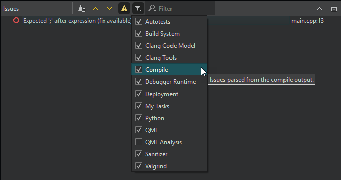

Issues
The Issues view filters out irrelevant output from the build tools and presents the issues in an organized way.
To further filter the output by type, select  (Filter Tree) and then select a filter. See the tooltips for more information about each filter.
(Filter Tree) and then select a filter. See the tooltips for more information about each filter.

To find output in the view, enter search criteria in the Filter field.
Select one or several lines to apply context-menu actions to their contents. You can remove the selected lines or copy their contents to the clipboard. For single lines, you can search the Internet for a solution using the contents of the line as search criteria or open a version control annotation view of the line that causes the error message.
To view detailed information about the selected line (where available), press Space.
To navigate to the corresponding source code, click an issue or select Show in Editor in the context menu. The entry must contain the name of the file where the issue was found.
To view more information about an issue in Compile Output, select Show Compile Output in the context menu.
To jump from one issue to the next or previous one, select  and
and  or press F6 and Shift+F6.
or press F6 and Shift+F6.
By default, a new build clears the Issues view. To keep the issues from the previous build rounds, deselect Preferences > Build & Run > General > Clear issues list on new build.
See also View output, Add custom output parsers, and Show task list files in Issues.